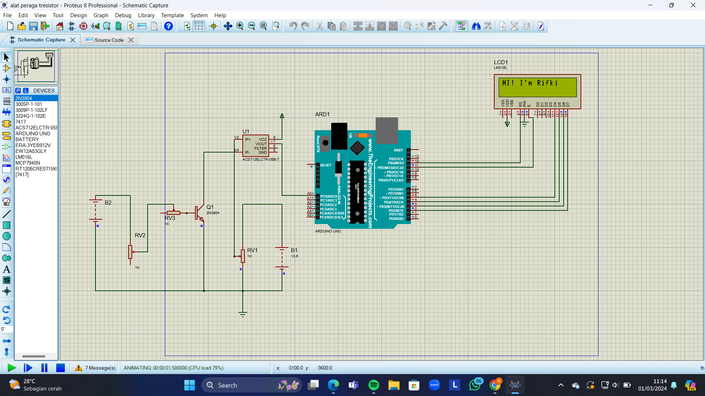

Alat Praga Karakteristik Arduino

Dalam tugas kali ini kita di suruh untuk merangkai sebuah alat praga.
Alat praga yang saya buat di aplikasi proteus 8 sebagai tempat untuk merangkai.
Kita tinggal mengikuti petunjuk yang sudah ada pada modul yang di berikan dari rumusan masalah,
Tujuan, Alat-Alat penelitian yang di butuhkan, bahan penelitian, rangkaian. semuanya sudah ada di modul.